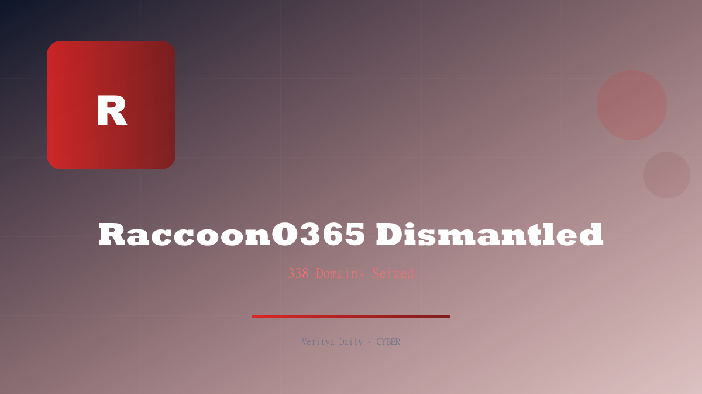

RaccoonO365 Phishing Network Dismantled

Key Takeaways
- Microsoft Digital Crimes Unit and Cloudflare seized 338 domains used for phishing
- RaccoonO365 operated as a phishing-as-a-service toolkit since July 2024
- Stole 5,000+ Microsoft 365 credentials from victims in 94 countries
- Microsoft stated the service made "cybercrime accessible to virtually anyone"
- The takedown disrupts a major credential-harvesting supply chain
What Was RaccoonO365?
RaccoonO365 was a phishing-as-a-service (PhaaS) platform that provided cybercriminals with ready-made tools to steal Microsoft 365 login credentials. Rather than requiring technical expertise, the service offered a turnkey solution: subscribers could launch convincing phishing campaigns mimicking Microsoft 365 login pages with minimal effort.
The toolkit generated realistic-looking login portals that closely mirrored Microsoft's actual authentication pages. These fake pages captured usernames, passwords, and — critically — multi-factor authentication tokens, allowing attackers to bypass MFA protections that organizations had carefully implemented.
RaccoonO365 was active since at least July 2024, operating continuously for over two years before the takedown. The service evolved over time, updating its phishing templates to match Microsoft's design changes and incorporating new evasion techniques to bypass email security filters.
"RaccoonO365 made cybercrime accessible to virtually anyone — no coding skills required, just a subscription and a list of email targets."
How the Phishing-as-a-Service Model Worked
The PhaaS model represented a dangerous evolution in cybercrime accessibility. Here's how RaccoonO365 operated:
- Subscription-based access: Criminals paid for access to the platform, receiving phishing page templates and credential-capture infrastructure
- Domain rotation: The service maintained hundreds of domains, rotating them to avoid blocklist detection
- Cloudflare integration: RaccoonO365 abused Cloudflare's services to mask its real server IP addresses and improve page load times
- Credential exfiltration: Stolen credentials were sent to centralized collection points controlled by the service operators
- MFA bypass: Advanced techniques captured session tokens, defeating multi-factor authentication
The service essentially lowered the barrier to entry for credential theft. A would-be attacker didn't need to understand phishing page design, email spoofing, or credential harvesting — RaccoonO365 handled all of that. This is why Microsoft described the operation as making "cybercrime accessible to virtually anyone."
| PhaaS Feature | Traditional Phishing | RaccoonO365 |
|---|---|---|
| Technical skill required | High | Minimal |
| Domain management | Manual | Automated rotation |
| MFA bypass | Rare | Built-in |
| Template updates | Manual | Continuous |
| Cost to attacker | Variable | Subscription fee |
The Takedown: 338 Domains Seized
The coordinated takedown involved Microsoft's Digital Crimes Unit and Cloudflare, combining legal authority with technical infrastructure control. Microsoft obtained a court order allowing the seizure of 338 domains associated with RaccoonO365's infrastructure, and Cloudflare executed the technical steps to redirect those domains away from the phishing servers.
This wasn't a simple domain suspension. The 338 domains represented RaccoonO365's entire operational footprint — the phishing pages, the redirect chains, the credential collection endpoints, and the management interfaces. By seizing all of them simultaneously, the operation dealt a crippling blow to the service's infrastructure.
The takedown also involved intelligence gathering. Microsoft's team analyzed the stolen credential data, identifying victim organizations and notifying affected parties. This post-takedown phase is critical: it's not enough to shut down the infrastructure — affected organizations need to know their credentials were compromised so they can take remedial action.
Scale of the Damage: 5,000+ Credentials, 94 Countries
The numbers tell a sobering story. RaccoonO365 stole over 5,000 Microsoft 365 credentials from victims spread across 94 countries. Each stolen credential represents a potential entry point into an organization's email, files, and internal systems.
Microsoft 365 credentials are particularly valuable because they provide access to:
- Outlook email — for spear-phishing and business email compromise attacks
- OneDrive and SharePoint — for data exfiltration and ransomware deployment
- Teams — for internal social engineering
- Azure Active Directory — for lateral movement and privilege escalation
- Power BI and Dynamics — for accessing business intelligence data
The geographic spread — 94 countries — demonstrates that PhaaS operations have global reach. No region was immune. Organizations in North America, Europe, Asia, Africa, and Latin America were all targeted, reflecting the indiscriminate nature of phishing campaigns launched through the platform.
Why This Takedown Matters
The RaccoonO365 takedown is significant for several reasons beyond the immediate disruption:
1. It disrupts the PhaaS supply chain. By seizing the entire domain infrastructure, the takedown doesn't just stop one campaign — it disables the platform that enabled dozens or hundreds of campaigns by different attackers.
2. It demonstrates effective public-private partnership. Microsoft provided the threat intelligence and legal action, while Cloudflare provided the technical infrastructure control. This collaboration model is becoming the template for future takedowns.
3. It exposes the scale of credential theft. 5,000+ stolen credentials over two years represents a significant intelligence failure for affected organizations. Many likely didn't know their credentials were compromised until Microsoft notified them.
4. It highlights the MFA bypass problem. RaccoonO365's ability to capture MFA tokens means that MFA alone is no longer sufficient. Organizations need phishing-resistant authentication methods like FIDO2 hardware keys.
Phishing-as-a-service has commoditized credential theft. The only defense is phishing-resistant authentication — not passwords, not SMS codes, not even authenticator apps.
Protecting Your Organization from Phishing-as-a-Service
The RaccoonO365 takedown is a wake-up call. Here's what organizations should do immediately:
- Deploy phishing-resistant MFA: FIDO2/WebAuthn hardware keys or platform authenticators that cryptographically bind to the legitimate domain
- Enable Conditional Access policies: Restrict M365 access based on device compliance, location, and risk signals
- Implement email authentication: DMARC, DKIM, and SPF to prevent domain spoofing in phishing emails
- Conduct credential audits: Check if your organization's credentials appeared in known breaches
- Train employees: Regular phishing simulations and awareness training — but don't rely on training alone
- Monitor for session token theft: Use Microsoft Defender for Cloud Apps to detect impossible travel and token replay attacks
- Review Cloudflare/security logs: Look for historical traffic to domains now known to be RaccoonO365 infrastructure
The takedown of RaccoonO365 is a victory, but it's temporary. Other PhaaS platforms will emerge to fill the void. The long-term solution isn't playing whack-a-mole with phishing domains — it's eliminating the password as an attack surface entirely through phishing-resistant authentication.